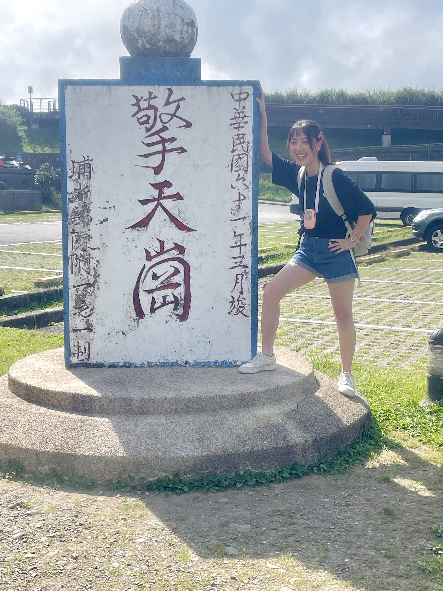
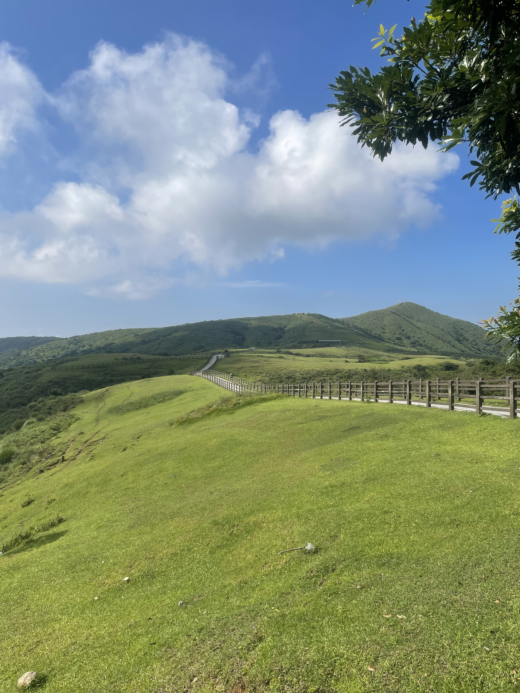
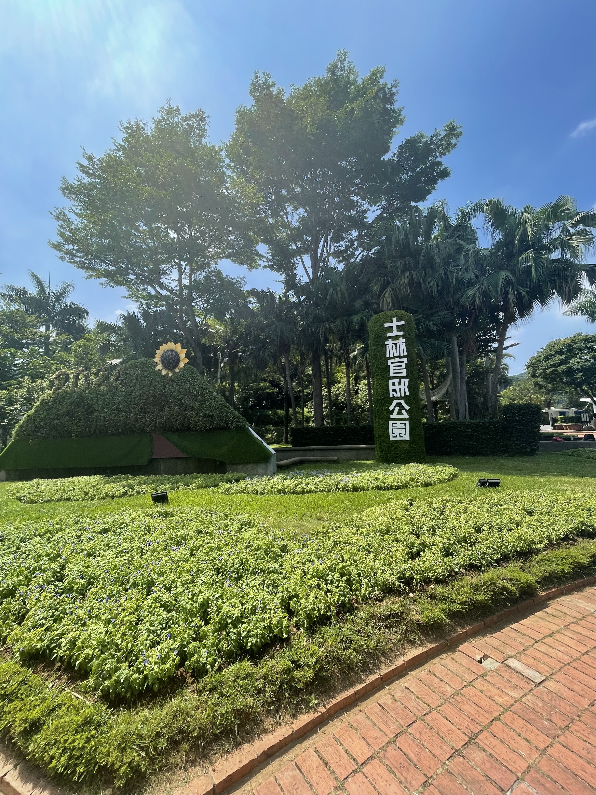
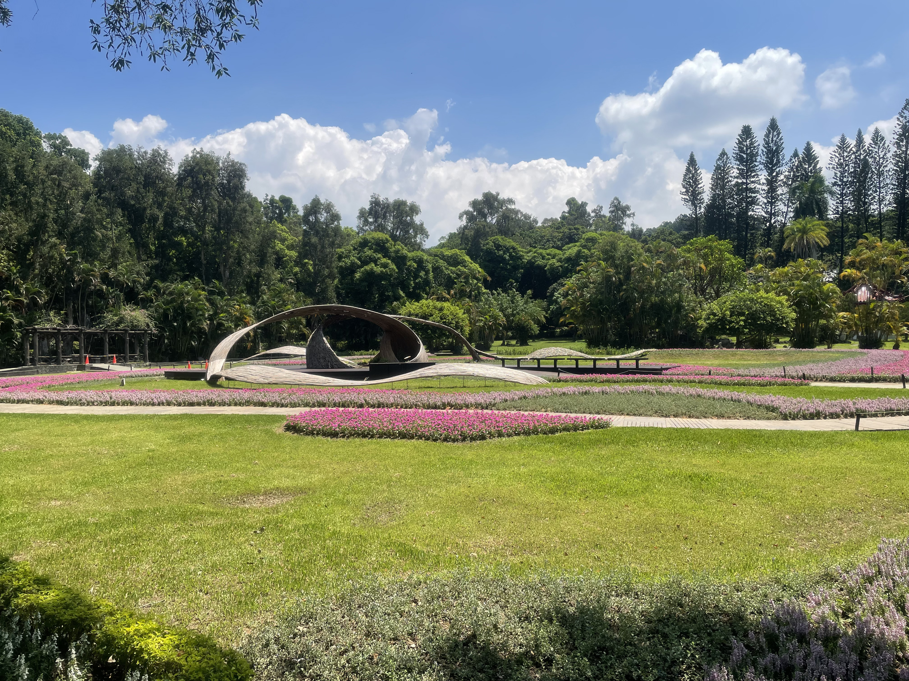
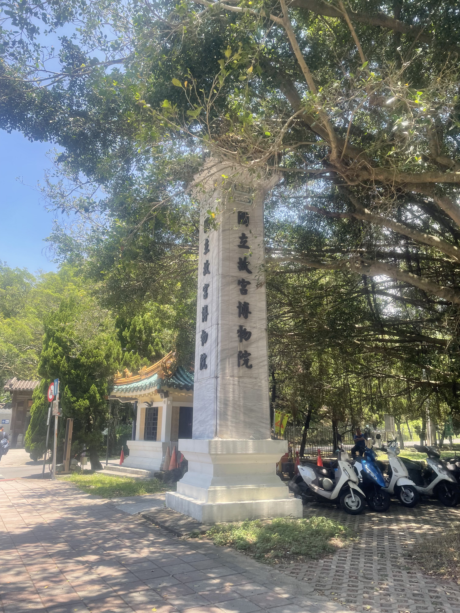
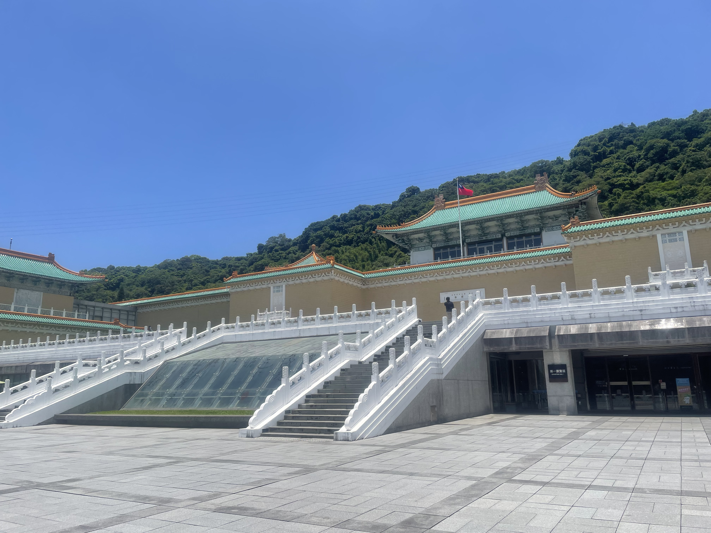
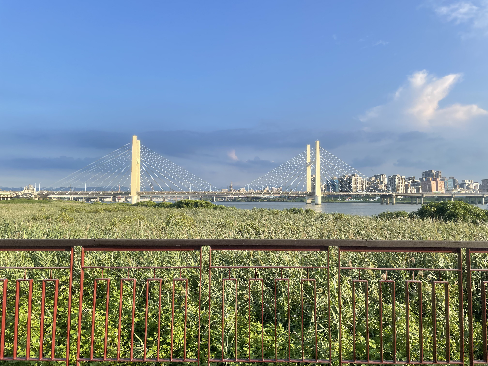
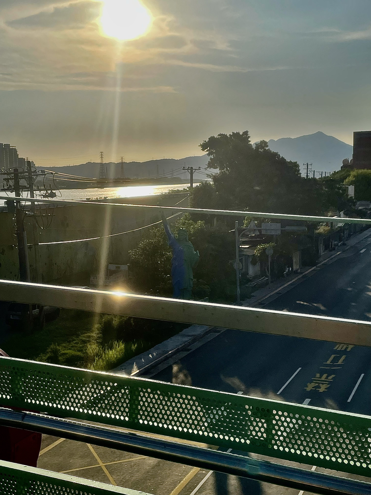

台北市士林區
基本資訊
位於台北市北側，是一個兼具自然景觀、文化資產與生活機能的重要行政區。由於地形涵蓋平原與山區，士林在都市發展之外，仍保有大片綠地與山林景觀，形成台北市少見的自然與城市並存的區域特質。 士林長期作為文化與觀光重鎮，歷史建築與傳統聚落分布其間，也因觀光活動而形成高度辨識的城市印象。同時，區內住宅區與商業機能成熟，居民生活步調相對穩定，與市中心的高密度節奏有所區隔。
推薦景點
| 擎天岡
位於台北市士林區陽明山國家公園內，是北台灣相當具代表性的高原草原景觀。廣闊起伏的草地搭配低矮山陵與遼闊天際線，使這裡呈現出不同於一般山林的開闊視野，也成為許多人認識陽明山自然樣貌的重要地點。 這一帶原本是火山地形風化後形成的草原，長期作為放牧使用，至今仍可見牛隻在草原上活動，構成獨特的人與自然共存景象。步道規劃完善，行走其間能感受到強風、雲霧與光影變化，四季景色各有不同。 擎天岡不只是觀光景點，更是一處能讓人暫時脫離都市節奏的自然空間。在距離市中心不遠的地方，保有如此開闊的草原景觀，也使其成為台北少見、具有高度辨識度的自然場域。
| 故宮博物院
是台灣最具國際知名度的文化機構之一，也被視為華人文化重要的典藏重鎮。館藏以歷代中國書畫、器物與文獻為核心，時間跨度長，類型完整，展現出深厚的歷史與藝術價值。 故宮的建築坐落於山坡地形之中，環境相對清幽，與館內所承載的文化厚度相互呼應。展覽以輪替方式呈現，讓文物在保存與展示之間取得平衡，也使每次造訪都能有不同的觀看經驗。








